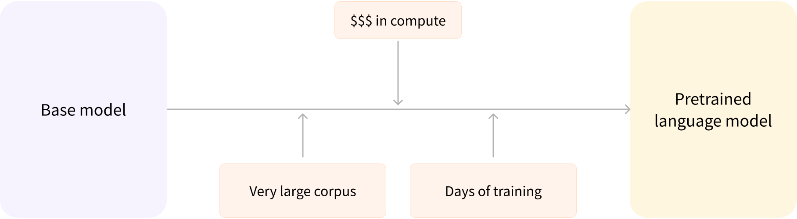

Transformer学习笔记
先验知识
迁移学习
-
迁移学习(Transfer Learning)是深度学习领域的一个重要研究方向。它通过利用已有模型的预训练参数来解决新任务的学习问题。
-
预训练是一种从头开始训练模型的方式：所有的模型权重都被随机初始化，然后在没有任何先验知识的情况下开始训练：

-
这个过程不仅需要海量的训练数据，而且时间和经济成本都非常高。因此大部分情况下，我们是将别人预训练好的模型权重通过迁移学习应用到自己的模型中，即使用自己的任务语料对模型进行“二次训练”，通过微调参数使得模型适用于新任务
-
迁移学习的好处是：
-
预训练时模型很可能已经见过与任务类似的数据集，通过微调可以激发出模型在预训练过程中获得的知识，将基于海量数据获得的统计理解能力应用于我们的任务；
-
由于模型已经在大量数据上进行过预训练，微调时只需要很少的数据量就可以达到不错的性能；
-
在自己任务上获得优秀性能所需的时间和计算成本都可以很小。
-
-
举例：我们可以选择一个在大规模英文语料上预训练好的模型，使用 arXiv 语料进行微调，以生成一个面向学术/研究领域的模型。这个微调的过程只需要很少的数据：我们相当于将预训练模型已经获得的知识“迁移”到了新的领域，因此被称为迁移学习。
-
在绝大部分情况下，我们都应该尝试找到一个尽可能接近我们任务的预训练模型，然后微调它，也就是所谓的“站在巨人的肩膀上”。
Transform 结构
- 标准的Transformer模型主要由两个模块构成：
- 编码器(Encoder)：负责理解输入文本，为每个输入构造对应的语义表示（语义特征）
- 解码器(Decoder)：负责生成输出，使用Encoder输出的语义表示结合其他输入来生成目标序列
== 插图 ==
-
这两个模块可以根据任务的需求而单独使用：
-
纯Encoder模型：适用于只需要理解输入语义的任务，例如：句子分类、命名实体识别；
-
纯Decoder模型：适用于生成式任务，例如文本生成
-
Encoder-Decoder 模型或 Seq2Seq 模型：适用于需要基于输入的生成式任务，例如翻译、摘要。
-
-
原始结构
-
Transformer 模型本来是为了翻译任务而设计的。在训练过程中，Encoder 接受源语言的句子作为输入，而 Decoder 则接受目标语言的翻译作为输入。
- 在 Encoder 中，由于翻译一个词语需要依赖于上下文，因此注意力层可以访问句子中的所有词语；
- 而 Decoder 是顺序地进行解码，在生成每个词语时，注意力层只能访问前面已经生成的单词。
-
举例，假设翻译模型当前已经预测出了三个词语，我们会把这三个词语作为输入送入 Decoder，然后 Decoder 结合 Encoder 所有的源语言输入来预测第四个词语。
实际训练中为了加快速度，会把整个目标序列都送入Decoder，然后在注意力层中通过Mask遮盖掉未来的词语来防止信息泄露。
== 插图 ==
注意力机制
Attention
-
NLP神经网络模型的本质就是对输入文本进行编码，常规的做法是首先对句子进行分词，然后将每个词语(token)都转化为对应的词向量（token embedding），这样文本就有转换为一个由词语向量组成的矩阵，其中表示第个词语的词向量，维度为，故的维度为。
-
《Attention is All You Need》直接使用Attention机制编码整个文本